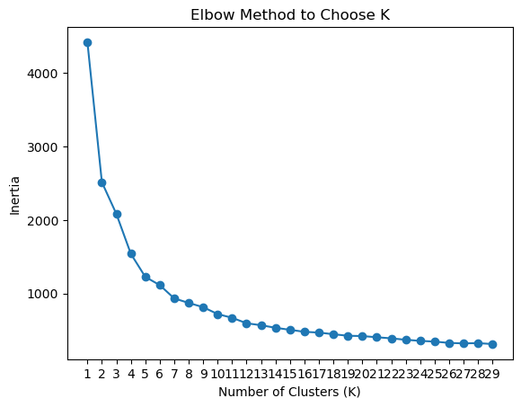
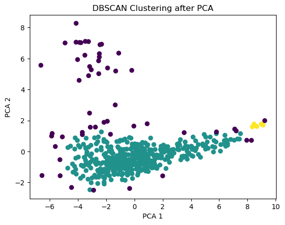

import pandas as pd
import numpy as np
import matplotlib.pyplot as plt
import seaborn as sns
import matplotlib.pyplot as plt
from sklearn.decomposition import PCA
from sklearn.preprocessing import StandardScaler
from sklearn.manifold import TSNE
from sklearn.cluster import KMeans, DBSCAN, AgglomerativeClustering, SpectralClustering
from sklearn.metrics import silhouette_scoreUnsupervised Learning
Instructions
Note: You should remove these instructions once you have read and understood them. They should not be included in your final submission.
Remember: Exactly what do you put on this page will be specific you your project and data. Some things might “make more sense” on one page rather than another, depending on your workflow. Organize your project in a logical way that makes the most sense to you.
Suggested page structure
Here’s one suggested structure for organizing your technical pages. You can adjust this as needed:
Audience:Remember that these are written for a technical audience. Assume they have completed the DSAN program, but would appreciate refreshers of the important concepts.
- Introduction and Motivation: Briefly outline your plan. What are you doing on this page, and why? Provide context and explain the goals of your analysis.
- Overview of Methods: Give a concise explanation of the methods used. For example, if using K-Means clustering, describe what it is, how it works, the inputs and outputs, and key hyperparameters.
- Code: Include the code you used to implement your workflow.
- Summary and Interpretation of Results: Summarize your findings, interpret the results, and discuss their technical implications.
What to address
The following is a list of some of the things you should address on this page. This list is not exhaustive, and you should use your judgment to decide what is most relevant to your project.
This page is designed to give you hands-on experience with key unsupervised learning techniques, including clustering methods and dimensionality reduction, applied to real-world datasets. Please apply algorithms such as K-Means, DBSCAN, Hierarchical clustering, PCA, and t-SNE to your data. Through this process, you’ll deepen your understanding of how unsupervised learning can reveal hidden patterns and structure in data.
Part 1: Dimensionality Reduction
The objective of this section is to explore and demonstrate the effectiveness of PCA and t-SNE in reducing the dimensionality of complex data while preserving essential information and improving visualization.
- PCA (Principal Component Analysis):
- Apply PCA to your dataset.
- Determine the optimal number of principal components.
- Visualize the reduced-dimensional data.
- Analyze and interpret the results.
- t-SNE (t-distributed Stochastic Neighbor Embedding):
- Implement t-SNE on the same dataset.
- Experiment with different perplexity values.
- Visualize the t-SNE output to reveal patterns and clusters.
- Compare the results of t-SNE with those from PCA.
- Evaluation and Comparison:
- Evaluate the effectiveness of PCA and t-SNE in preserving data structure.
- Compare the visualization capabilities of both techniques.
- Discuss the trade-offs and scenarios where one technique may perform better than the other.
Part 2: Clustering Methods
Apply clustering techniques (K-Means, DBSCAN, and Hierarchical clustering) to a selected dataset. The goal is to understand how each method works, compare their performance, and interpret the results.
- Clustering Methods:
- Apply K-Means, DBSCAN, and Hierarchical clustering to your dataset.
- Write a technical summary for each method (2–4 paragraphs per method) explaining how it works, its purpose, and any model selection methods used (e.g., Elbow, Silhouette).
- Results Section:
- Discuss and visualize the results of each clustering analysis.
- Compare the performance of different clustering methods, noting any insights gained from the analysis.
- Visualize cluster patterns and how they relate (if at all) to existing labels in the dataset.
- Use professional, labeled, and clear visualizations that support your discussion.
- Conclusion:
- Summarize the key findings and their real-world implications in a non-technical way. Focus on the most important results and how they could apply to practical situations.
Part 1: Dimensionality Reduction
PCA
Principal Component Analysis is an unsupervised learning technique used for dimensionality reduction. It uses linear transformations to find the most important features, or principal components. It is a great technique to use if you have many dimensions and need a way to visualize them in 2 dimensions. It is a good preprocessing technique to do before supervised learning. The goal is to capture as much of the variance contained in the features but in reduced dimensions. N_components specifies how many prinicipal components we want.
We are going to attempt to apply PCA on our socioeconomic features
df = pd.read_csv('../../data/processed-data/processed_df.csv', index_col=None)subset = df[[ "Percent HRA Eligible",
"Percent in Temp Housing",
"Percent Overage / Undercredited",
"Economic Need Index",
'Percent No High School (25+)',
"Percent Bachelor's Degree or Higher (25+)",
'Percent Language Other Than English at Home',
'Percent Population with Disabilities',
'Percent Foreign-Born Population',
'Percent Households with Broadband Internet',
'Median Household Income',
'Percent Households on SNAP/Food Stamps']]scaler = StandardScaler()
X_scaled = scaler.fit_transform(subset)pca = PCA(n_components=2)
X_pca = pca.fit_transform(X_scaled)
#visualize the first two components
plt.scatter(X_pca[:,0], X_pca[:,1], alpha=0.5)
plt.xlabel('PC-1')
plt.ylabel('PC-2')
plt.title('Principal Component Analysis')
plt.show()
def plot_variance_explained(pca):
print("Variance explained by each principal component: ")
print(pca.explained_variance_ratio_[0:10])
print("Cumulative variance explained by each principal component: ")
print(np.cumsum(pca.explained_variance_ratio_)[0:10])
plt.plot(pca.explained_variance_ratio_, marker='o')
plt.xlabel("number of components")
plt.ylabel("explained variance ratio")
plt.show()
plt.plot(np.cumsum(pca.explained_variance_ratio_), marker='o')
plt.xlabel("number of components")
plt.ylabel("cumulative explained variance")
plt.show()It looks like 2 is the best number of principal components
plot_variance_explained(pca)Variance explained by each principal component:
[0.46812599 0.14041224 0.12717426 0.09999827]
Cumulative variance explained by each principal component:
[0.46812599 0.60853822 0.73571248 0.83571075]

t-SNE
t-SNE is an unsupervised learning technique used to for dimensionality reduction. It is a better alternative for non-linear data. Perplexity is the most important hyperparameter in t_SNE. This paramter controls the balance between local and global structure. A high preplexity preseves global structure while a lower perplexity emphasizes local structure.
tsne = TSNE(n_components=2)
X_tsne = tsne.fit_transform(X_scaled)fig, ax = plt.subplots()
ax.scatter(X_tsne[:,0], X_tsne[:,1], alpha=0.5)
ax.set(xlabel='tSNE-1 ', ylabel='tSNE-2',
title='tSNE results')
ax.grid()
plt.show()
Kmeans Clustering
Kmeans is another unsupervised learning technique used for clustering. We use the elbow method to find the best number of clusters. We want to choose the number of clusters at the elbow of the graph becasue this indicates that the inertia reduction is decreasing, and there is diminishing returns in adding more clusters. The goal of clustering is to maximize the intercluster distance (distance between clusters - seapartion) and minimize intracluster distance (distance from points to center of cluster - cohesion). The goal is to minimize the variance within each cluster. We can measure how good our clustering is using the silhouette score.
inertia = []
k_values = range(1, 30)
for k in k_values:
kmeans = KMeans(n_clusters=k, random_state=42)
kmeans.fit(X_pca)
inertia.append(kmeans.inertia_)
plt.plot(k_values, inertia, marker='o')
plt.xlabel("Number of Clusters (K)")
plt.ylabel("Inertia")
plt.title("Elbow Method to Choose K")
plt.xticks(k_values)
plt.show()
We can see that the optimal number of clusters is about 4.
# choose k
n_clusters = 4
kmeans = KMeans(n_clusters=n_clusters, random_state=42)
econ_clusters = kmeans.fit_predict(X_pca)
for cluster in range(n_clusters):
plt.scatter(X_pca[econ_clusters == cluster, 0], X_pca[econ_clusters == cluster, 1],
label=f"Cluster {cluster + 1}", s=50, alpha=0.6)
plt.xlabel("tSNE 1")
plt.ylabel("tSNE 2")
plt.title("K-means Clustering of Socioeconomic Factors")
plt.legend()
plt.show()
cluster_labels = kmeans.labels_
silhouette_avg = silhouette_score(X_scaled, cluster_labels)
print(f'Silhouette Score: {silhouette_avg}')Silhouette Score: 0.16605649350908025Conclusion: there is not large separation between the clusters, indicating that we may need to use an alternate dimensionality reduction technique
DBSCAN
DBSCAN is an unsupervised learning clustering algorithm that is better suited for irregular data. It improves upon kmeans because it is able to find non linear clusters. It is also able to identify noise.
dbscan = DBSCAN(eps=0.5, min_samples=3)
dbscan.fit(subset)
df['DBSCAN_Cluster'] = dbscan.labels_noise_points = df[df['DBSCAN_Cluster'] == -1]plt.figure(figsize=(10, 6))
plt.scatter(subset[:, 0], subset[:, 1], c=dbscan.labels_, cmap='rainbow', s=20)
plt.title("DBSCAN Clustering")
plt.xlabel("Feature 1 (Standardized)")
plt.ylabel("Feature 2 (Standardized)")
plt.colorbar(label="Cluster Label")
plt.show()--------------------------------------------------------------------------- TypeError Traceback (most recent call last) File /opt/anaconda3/envs/dsan5400/lib/python3.11/site-packages/pandas/core/indexes/base.py:3805, in Index.get_loc(self, key) 3804 try: -> 3805 return self._engine.get_loc(casted_key) 3806 except KeyError as err: File index.pyx:167, in pandas._libs.index.IndexEngine.get_loc() File index.pyx:173, in pandas._libs.index.IndexEngine.get_loc() TypeError: '(slice(None, None, None), 0)' is an invalid key During handling of the above exception, another exception occurred: InvalidIndexError Traceback (most recent call last) Cell In[60], line 2 1 plt.figure(figsize=(10, 6)) ----> 2 plt.scatter(subset[:, 0], subset[:, 1], c=dbscan.labels_, cmap='rainbow', s=20) 3 plt.title("DBSCAN Clustering") 4 plt.xlabel("Feature 1 (Standardized)") File /opt/anaconda3/envs/dsan5400/lib/python3.11/site-packages/pandas/core/frame.py:4102, in DataFrame.__getitem__(self, key) 4100 if self.columns.nlevels > 1: 4101 return self._getitem_multilevel(key) -> 4102 indexer = self.columns.get_loc(key) 4103 if is_integer(indexer): 4104 indexer = [indexer] File /opt/anaconda3/envs/dsan5400/lib/python3.11/site-packages/pandas/core/indexes/base.py:3817, in Index.get_loc(self, key) 3812 raise KeyError(key) from err 3813 except TypeError: 3814 # If we have a listlike key, _check_indexing_error will raise 3815 # InvalidIndexError. Otherwise we fall through and re-raise 3816 # the TypeError. -> 3817 self._check_indexing_error(key) 3818 raise File /opt/anaconda3/envs/dsan5400/lib/python3.11/site-packages/pandas/core/indexes/base.py:6059, in Index._check_indexing_error(self, key) 6055 def _check_indexing_error(self, key): 6056 if not is_scalar(key): 6057 # if key is not a scalar, directly raise an error (the code below 6058 # would convert to numpy arrays and raise later any way) - GH29926 -> 6059 raise InvalidIndexError(key) InvalidIndexError: (slice(None, None, None), 0)
<Figure size 1000x600 with 0 Axes>from sklearn.neighbors import NearestNeighbors
neighbors = NearestNeighbors(n_neighbors=5)
neighbors_fit = neighbors.fit(X_scaled)
distances, indices = neighbors_fit.kneighbors(X_scaled)
# Sort distances for plotting
distances = np.sort(distances[:, 4], axis=0)
plt.figure(figsize=(10, 6))
plt.plot(distances)
plt.title("k-Distance Plot")
plt.xlabel("Data Points Sorted")
plt.ylabel("4th Nearest Neighbor Distance")
plt.show()
eps_range = np.arange(0.1, 1.1, 0.1)
min_samples_values = range(2, 20)
results = []
for eps in eps_range:
for min_samples in min_samples_values:
dbscan = DBSCAN(eps=eps, min_samples=min_samples)
labels = dbscan.fit_predict(X_scaled)
if len(set(labels)) > 1:
score = silhouette_score(X_scaled, labels)
results.append((eps, min_samples, score))results_df = pd.DataFrame(results, columns=['eps', 'min_samples', 'silhouette_score'])
best_params = results_df.loc[results_df['silhouette_score'].idxmax()]
best_min_samples = best_params['min_samples']
best_eps = best_params['eps']
print(f"Best eps: {best_eps}, Best min_samples: {best_min_samples}")Best eps: 1.0, Best min_samples: 13.0clustering = DBSCAN(eps=best_eps, min_samples=int(best_min_samples))
clustering_labels = clustering.fit_predict(X_scaled)plot = plt.scatter(df['bill_depth_mm'], df['flipper_length_mm'],c=clustering_labels)
plt.xlabel('Feature 1')
plt.ylabel('Feature 2')
plt.title("DBSCAN Clustering")
unique_labels = np.unique(clustering_labels)
legend_labels = ["Noise" if label == -1 else f"Cluster {label + 1}" for label in unique_labels]
handles, _ = scatter.legend_elements()
plt.legend(handles, legend_labels, title="Clusters")from sklearn.decomposition import PCA
# Apply PCA to reduce to 2D
pca = PCA(n_components=2)
df_pca = pca.fit_transform(df_courses)
# Plot the 2D clustering
plt.figure(figsize=(10, 6))
plt.scatter(df_pca[:, 0], df_pca[:, 1], c=clustering_labels, cmap='viridis')
# Adding labels and title
plt.xlabel('PCA Component 1')
plt.ylabel('PCA Component 2')
plt.title("DBSCAN Clustering (PCA Reduced Dimensions)")
# Add legend for clusters
unique_labels = np.unique(clustering_labels)
legend_labels = ["Noise" if label == -1 else f"Cluster {label + 1}" for label in unique_labels]
handles, _ = plt.gca().get_legend_handles_labels()
plt.legend(handles, legend_labels, title="Clusters")
# Show plot
plt.show()
from sklearn.cluster import AgglomerativeClustering
from sklearn.datasets import make_blobs
# Example: Generate synthetic data
X, y = make_blobs(n_samples=300, centers=4, random_state=42)
# Perform Agglomerative Clustering
agg_clust = AgglomerativeClustering(n_clusters=4, linkage='ward')
y_pred = agg_clust.fit_predict(X_scaled)
# Plot the result
plt.figure(figsize=(8, 6))
plt.scatter(X_scaled[:, 0], X_scaled[:, 1], c=y_pred, cmap='viridis')
plt.title('Agglomerative Clustering')
plt.xlabel('Feature 1')
plt.ylabel('Feature 2')
plt.show()
from scipy.cluster.hierarchy import dendrogram, linkage# Perform hierarchical/agglomerative clustering
Z = linkage(subset, 'ward')
# Create a dendrogram
plt.figure(figsize=(10, 7))
dendrogram(Z)
plt.title('Dendrogram for Agglomerative Clustering')
plt.xlabel('Data points')
plt.ylabel('Distance')
plt.show()